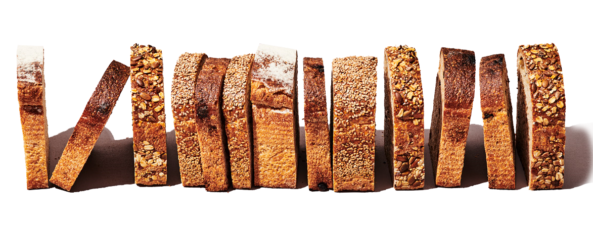
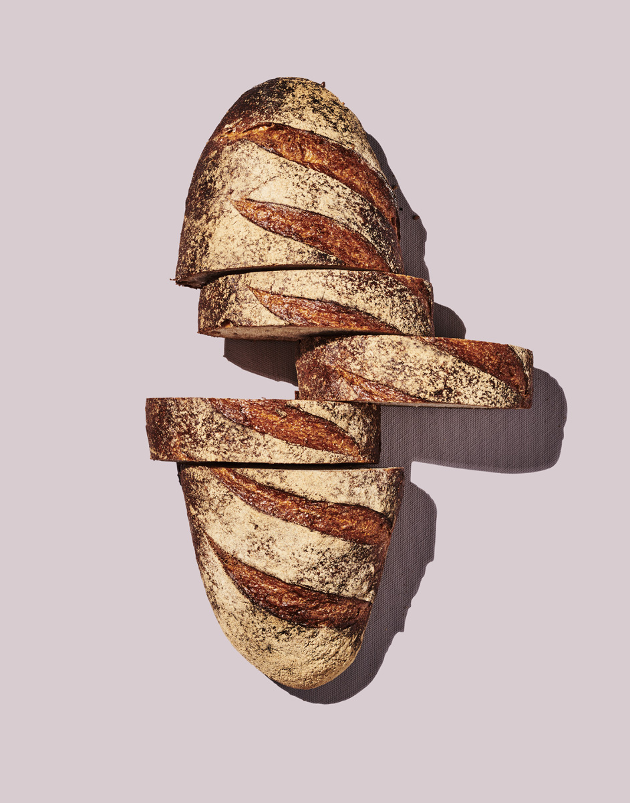
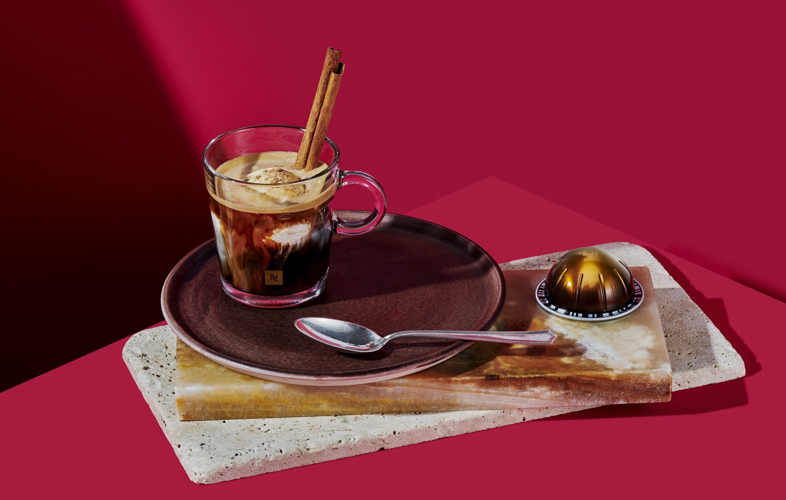
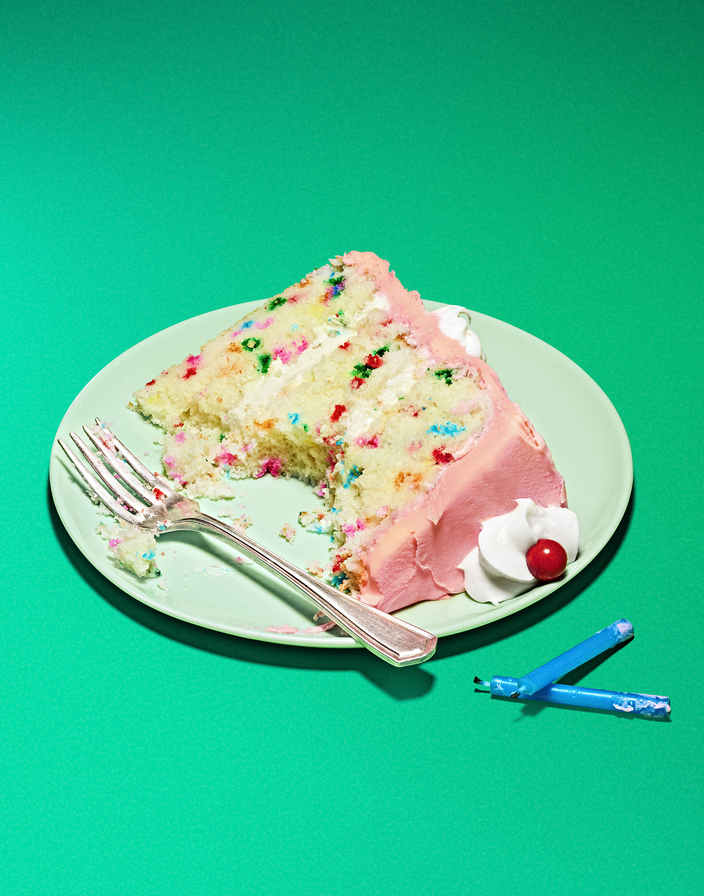
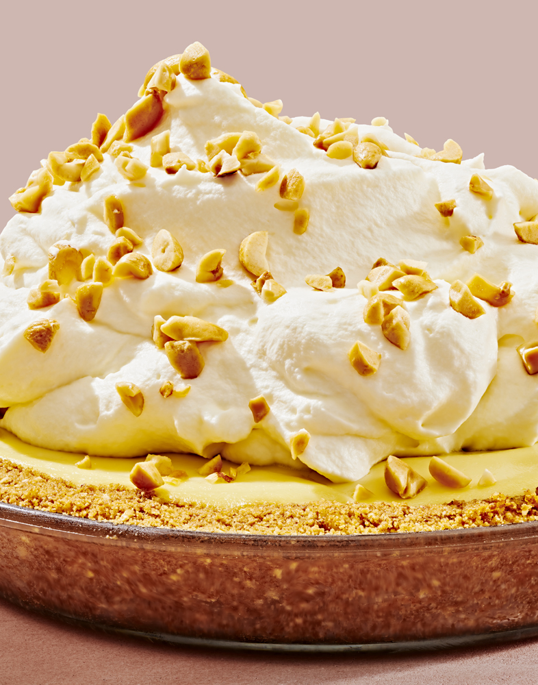
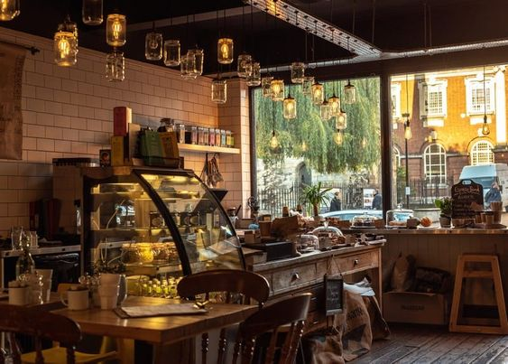

COMPROMISSO COM A QUALIDADE
Aqui na Padaria Pão D'Casa você encontra uma variedade de produtos tradicionais da panificação e confeitaria, produzidos com receitas exclusivas, além de um espaço aconchegante e acolhedor para você e sua família.
Temos a preocupação e o cuidado em desenvolver e comercializar produtos que contribuam positivamente para a saúde dos nossos clientes. Por isso, asseguramos que nossos produtos são confeccionados com itens de qualidade comprovada e adquiridos dos melhores fornecedores do mercado.

   
Além da padaria com produtos variados fresquinhos e de qualidade, oferecemos também o serviço de cafeteria e sobremesas deliciosas. Tudo isso num ambiente charmoso e aconchegante, pensado especialmente no conforto dos nossos clientes ao sentar e saborear um delicioso café da manhã, brunch ou lanche.

FALE CONOSCO
Você pode entrar em contato conosco para qualquer eventual dúvida sobre nossos serviços, para encomendas e até mesmo elogios ou sugestões.
 Clique aqui para enviar um email Clique aqui para enviar um email
Fale com a gente pelo Whatsapp
|
|